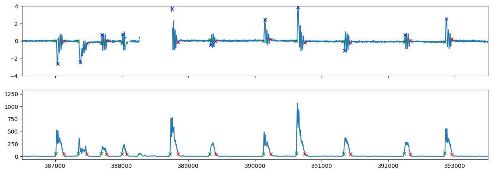
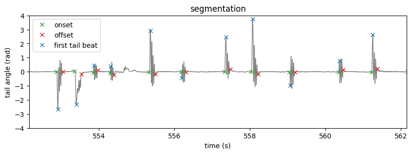
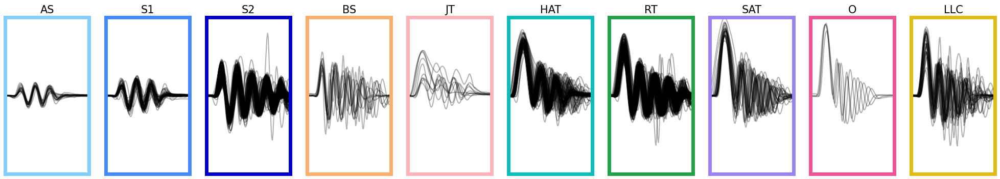
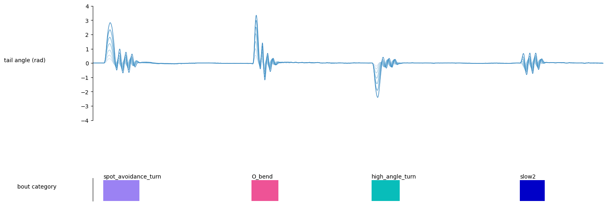

Full tracking pipeline#
In this notebook, we will walk through the process of running the full tracking pipeline. The pipeline handles preprocessing of tracking data and segmentation/classification of tail bouts.
Loading dependencies
import numpy as np
import matplotlib.pyplot as plt
import matplotlib.gridspec as gridspec
from cycler import cycler
from megabouts.tracking_data import TrackingConfig, FullTrackingData, load_example_data
from megabouts.pipeline import FullTrackingPipeline
from megabouts.utils import (
bouts_category_name,
bouts_category_name_short,
bouts_category_color,
cmp_bouts,
)
Loading data into the
FullTrackingData:
df_recording, fps, mm_per_unit = load_example_data("fulltracking_posture")
tracking_cfg = TrackingConfig(fps=fps, tracking="full_tracking")
head_x = df_recording["head_x"].values * mm_per_unit
head_y = df_recording["head_y"].values * mm_per_unit
head_yaw = df_recording["head_angle"].values
tail_angle = df_recording.filter(like="tail_angle").values
tracking_data = FullTrackingData.from_posture(
head_x=head_x, head_y=head_y, head_yaw=head_yaw, tail_angle=tail_angle
)
Define the pipeline:
pipeline = FullTrackingPipeline(tracking_cfg, exclude_CS=True)
The pipeline has a default configuration, but we can change it if needed, for instance let’s change the segmentation threshold:
pipeline.segmentation_cfg.threshold = 50
Run the pipeline:
pipeline.tail_preprocessing_cfg
TailPreprocessingConfig(fps=700, limit_na_ms=100, num_pcs=4, savgol_window_ms=15, baseline_method='median', baseline_params={'fps': 700, 'half_window': 350}, tail_speed_filter_ms=100, tail_speed_boxcar_filter_ms=14)
pipeline.tail_preprocessing_cfg.savgol_window
11
ethogram, bouts, segments, tail, traj = pipeline.run(tracking_data)
We can check the segmentation and first tail beat detection:
Show code cell source
fig, ax = plt.subplots(2, 1, figsize=(15, 5), sharex=True)
x = tracking_data._tail_angle[:, 7]
ax[0].plot(x)
ax[0].plot(segments.onset, x[segments.onset], "x", color="green")
ax[0].plot(segments.offset, x[segments.offset], "x", color="red")
ax[0].plot(segments.HB1, x[segments.HB1], "x", color="blue")
ax[0].set_ylim(-4, 4)
x = tail.vigor
ax[1].plot(x)
ax[1].plot(segments.onset, x[segments.onset], "x", color="green")
ax[1].plot(segments.offset, x[segments.offset], "x", color="red")
t = np.arange(tracking_data.T) / tracking_cfg.fps
IdSt = 386502 # np.random.randint(tracking_data.T)
Duration = 10 * tracking_cfg.fps
ax[1].set_xlim(IdSt, IdSt + Duration)
fig, ax = plt.subplots(1, 1, figsize=(10, 3))
x = tail.df.angle_smooth.iloc[:, 7]
ax.plot(t, x, color="tab:grey", lw=1)
ax.plot(t[segments.onset], x[segments.onset], "x", color="tab:green", label="onset")
ax.plot(t[segments.offset], x[segments.offset], "x", color="tab:red", label="offset")
ax.plot(
t[segments.HB1], x[segments.HB1], "x", color="tab:blue", label="first tail beat"
)
ax.set(
**{
"title": "segmentation",
"xlim": (t[IdSt], t[IdSt + Duration]),
"ylim": (-4, 4),
"ylabel": "tail angle (rad)",
"xlabel": "time (s)",
}
)
ax.legend()
plt.show()


Let’s display the bouts classified with a probability greater than 0.5:
Show code cell source
id_b = np.unique(bouts.df.label.category[bouts.df.label.proba > 0.5]).astype("int")
fig, ax = plt.subplots(facecolor="white", figsize=(25, 4))
ax.spines["top"].set_visible(False)
ax.spines["right"].set_visible(False)
ax.spines["bottom"].set_visible(False)
ax.spines["left"].set_visible(False)
ax.set_xticks([])
ax.set_yticks([])
G = gridspec.GridSpec(1, len(id_b))
ax0 = {}
for i, b in enumerate(id_b):
ax0 = plt.subplot(G[i])
ax0.set_title(bouts_category_name_short[b], fontsize=15)
for i_sg, sg in enumerate([1, -1]):
id = bouts.df[
(bouts.df.label.category == b)
& (bouts.df.label.sign == sg)
& (bouts.df.label.proba > 0.5)
].index
if len(id) > 0:
ax0.plot(sg * bouts.tail[id, 7, :].T, color="k", alpha=0.3)
ax0.set_xlim(0, pipeline.segmentation_cfg.bout_duration)
ax0.set_ylim(-4, 4)
ax0.set_xticks([])
ax0.set_yticks([])
for sp in ["top", "bottom", "left", "right"]:
ax0.spines[sp].set_color(bouts_category_color[b])
ax0.spines[sp].set_linewidth(5)
plt.show()

Finally, we can display a sample ethogram:
Show code cell source
IdSt = 161011
T = 3
Duration = T * tracking_cfg.fps
IdEd = IdSt + Duration
t = np.arange(Duration) / tracking_cfg.fps
fig = plt.figure(facecolor="white", figsize=(15, 5), constrained_layout=True)
G = gridspec.GridSpec(2, 1, height_ratios=[1, 0.2], hspace=0.5, figure=fig)
ax = plt.subplot(G[0, 0])
blue_cycler = cycler(color=plt.cm.Blues(np.linspace(0.2, 0.9, 10)))
ax.set_prop_cycle(blue_cycler)
ax.plot(t, ethogram.df["tail_angle"].values[IdSt:IdEd, :7], lw=1)
ax.set_ylim(-4, 4)
ax.set_xlim(0, T)
ax.spines["top"].set_visible(False)
ax.spines["right"].set_visible(False)
ax.spines["bottom"].set_visible(False)
ax.get_yaxis().tick_left()
ax.get_xaxis().set_ticks([])
ax.set_ylabel("tail angle (rad)", rotation=0, labelpad=100)
ax = plt.subplot(G[1, 0])
ax.imshow(
ethogram.df[("bout", "cat")].values[IdSt:IdEd].T,
cmap=cmp_bouts,
aspect="auto",
vmin=0,
vmax=12,
interpolation="nearest",
extent=(0, T, 0, 1),
)
ax.spines["top"].set_visible(False)
ax.spines["right"].set_visible(False)
ax.spines["bottom"].set_visible(False)
ax.get_yaxis().tick_left()
ax.get_xaxis().set_ticks([])
ax.get_yaxis().set_ticks([])
ax.set_xlim(0, T)
ax.set_ylim(0, 1.1)
id_b = np.unique(ethogram.df[("bout", "id")].values[IdSt:IdEd]).astype("int")
id_b = id_b[id_b > -1]
for i in id_b:
on_ = bouts.df.iloc[i][("location", "onset")]
b = bouts.df.iloc[i][("label", "category")]
ax.text((on_ - IdSt) / tracking_cfg.fps, 1.1, bouts_category_name[int(b)])
ax.set_ylabel("bout category", rotation=0, labelpad=100)
plt.show()
